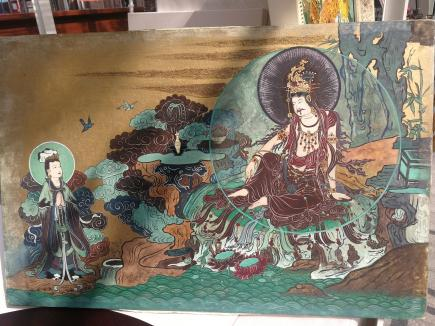
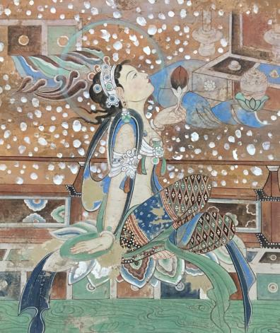

壁画是墙壁上的艺术，即人们直接画在墙面上的画。作为建筑物的附属部分，壁画的装饰和美化功能使它成为环境艺术的一个重要方面。壁画为人类历史上最早的绘画形式之一。我国早在汉朝就有在墙壁上作画的记载，多是在石窟、墓室或是寺观的墙壁。
壁画指绘在壁上的画。原始社会人类在洞壁上刻画各种图形，以记事表情，这是最早的壁画。据历史记载，汉武帝画诸神像于甘泉宫，宣帝图功臣像于麒麟阁，也都是壁画。自魏晋到唐宋，佛道两教盛行，寺院道观多有壁画。敦煌壁画保存了当时大量杰出的艺术作品。明清卷轴盛行，壁画渐衰。唐骆宾王《四月八日题七级》诗：“铭书非晋代，壁画是梁年。”唐段成式、张希复《游长安诸寺联句·诸画联句》：“惜哉壁画世未殚，后人新画何汗漫”宋陆游《老学庵笔记》卷二：“江渎庙西厢有壁画犊车。”郭沫若《李白与杜甫·杜甫的宗教信仰》：“太微宫里面有壁面，是名画家吴道子的手笔。”
在建筑物上的壁画，大致可以分为粗地壁画、刷地壁画、绘制壁画、浮雕壁画、马赛克镶嵌壁画以及其他工艺材料壁画等等。传统的刷地壁画又分湿壁画和干壁画。中国古代壁画一般以绘制场所的不同而区分，有店堂壁画、寺观壁画、石窟壁画、墓室壁画、民居住宅壁画等。现代壁画主要目的是建筑装饰，与建筑物及周边环境的协调、融合是最重要的，材料更加多样化，具有耐久性。
目前已发现的最早的壁画是汉代作品，其分布较广，河南、山西、辽宁、河北、山东、内蒙古等地的汉墓都有壁画。画的内容有神话传说、历史故事以及表现生活场景。汉代壁画是汉代美术创作活动中的一个极为重要的组成部分，以大型建筑物壁画和墓室壁画为主，反映了汉代统治阶级提倡孝道盛行厚葬。魏晋以前，壁画多表现神话与世俗生活。佛教传入以后，宗教壁画迅速发展，除墓室壁画外，还大量出现宣传佛教内容的壁画。在甘肃、河南等地的石窟寺中，就存留着许多美丽的佛教壁画。
从北魏开始，大规模的凿窟建洞逐渐兴起，唐代形成石窟壁画的高峰期，莫高窟、克孜尔石窟和陕西许多唐墓，都显示出中国古代壁画的风貌与艺术高度。其中以敦煌莫高窟为代表。敦煌壁画数量巨大，内容丰富，既有反映宗教题材的，也有反映当时一些生产劳动场面、社会生活场景的，具有很高的艺术价值。其中最具色彩的当属美轮美奂的各种飞天神女像。盛唐时期的壁画水平最高。学者都将敦煌壁画称作是“墙壁上的图书馆”。此外，唐王朝陵墓建设吸收前代样式，形成具有自己特殊概念的陵寝形制。墓葬内大量使用壁画，场面宏伟，内容丰富，色彩鲜艳，形象生动，充分显示出运思之精巧与技艺之卓绝。
唐代的题材非常丰富，大致可归纳为：净土变相，经变故事画，佛、菩萨等像，供养人。净土变相的构图利用建筑物的透视造成空间深广的印象，复杂丰富的画面仍非常紧凑完整，是绘画艺术发展中一重要突破，一直被后世所摹仿、复制并长期流传。经变故事画以零窟和三三五窟的图像作为代表，内容丰富而多变，场面和情节被处理得真实有趣。绘画和雕刻中的佛、菩萨等像在唐代的佛教美术中是一重要创造，这些形象所表现出来的动作及表情比前代更加多样化了，出现了多种坐、立、行走、飞翔中的生动姿态，特别是唐代菩萨的形象为古代美术中理想与现实成功结合的重要范例。唐代供养人壁画精心描绘了上层社会生活的基本内容，一三零窟盛唐时期乐庭瑰和他的妻子王氏的供养像是优秀的代表作，有名的还有《张议潮夫妇的出行图》。